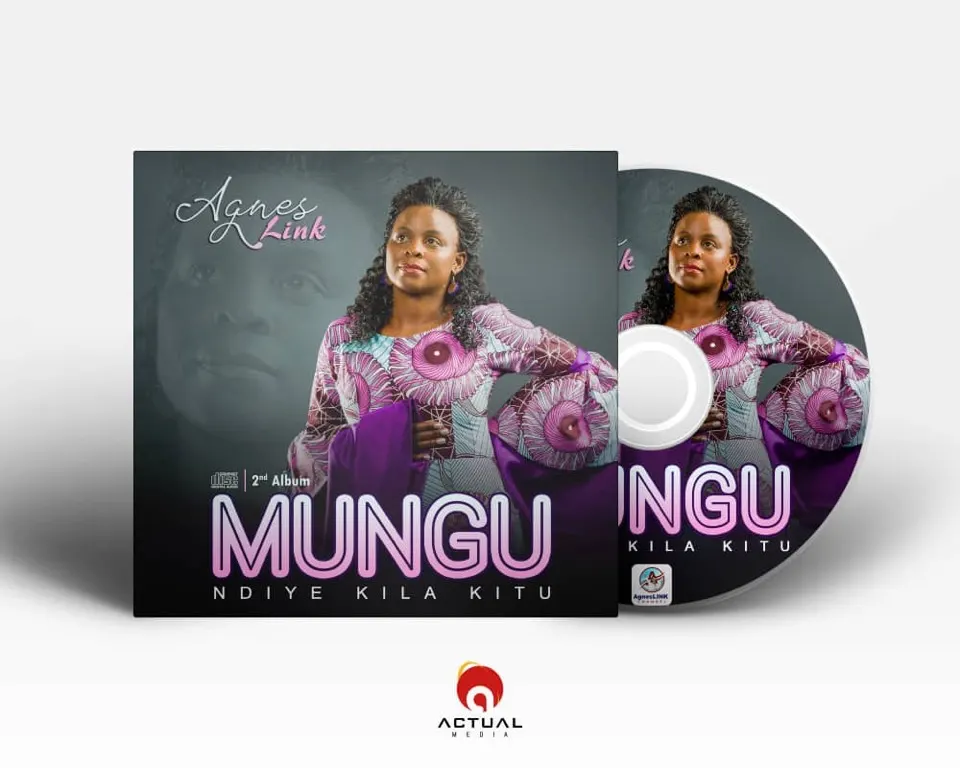
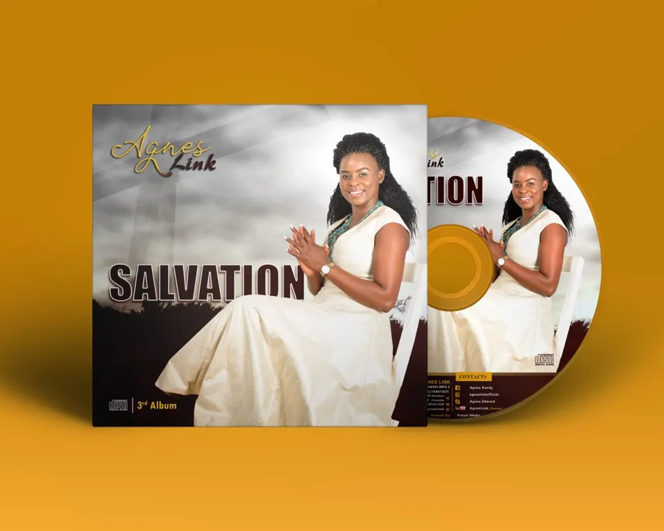
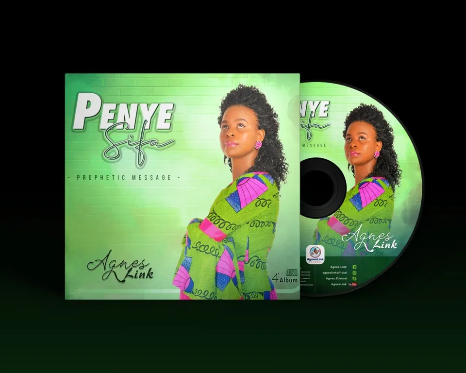

AgnesLink Channel
Albums
Agnes Link - 1st Album: BABA NAKUSHUKURU
Baba Nakushukuru, is my very first Album, it has 8 songs. By God's grace, I will have many more Albums but this will be highly cherished in my atention. It carries my very first experience and feeling of me being in music industry. I never think or plan to be a Singer. It is a gift from God. The feeling of being in the studio for the first time, recording the song Baba nakushukuru, never come out of my memory. it was very powerful, there was so much power of God in that room. You can see a little bit of what happened on Agneslink YouTube channel.

"But godliness with contentment is great gain" (1Timothy 6:6)

"The LORD will guide you continually, and satisfy your soul in drought, and strengthern your bones; You shall be like a watered garden, and like a spring of water, whose waters do not fail" (Isaiah 58:11)
Agnes Link - 2nd Album: MUNGU NDIYE KILA KITU
The second album called "MUNGU NDIYE KILA KITU" has 8 songs. It was produced in July 2019. Agnes writes and composed one songs melody "YESU NI YEYE YULE and REPENTANCE (speaking song)". The rest were composed by Brother Joshua Mlelwa. The driving force for this album and expecially for the song that carries it, is that, I believe we are all potential and nothing makes anybody to qualify to ignore the other. We are all potential everyone on his/her own way and we should love and respect one another. The song sited things like education and beauty that they are all important but they dont make any body better than the other.
The album carries songs with a message full of encouragents. Example, Saul of today can be Paul of tomorow, poor man of today can be a rich man of tomorow, prostitute woman of today can be a virtuaous wife of tomorow. All these means what you are, doesn't make you bettter than all and we must know what we are today is not permanent. so we should love one another and always worship God and know in Him all things are possible. MUNGU NDIYE KILA KITU/HE IS EVERYTHING/GOTT IST ALLES
Agnes Link - 3rd Album: SALVATION
The third album called "SALVATION" has 8 songs. 4 songs were produced in July 2019 at Shekinah Studios and 3 songs were produced in October 2019 by Success studios. All in Dar es Salaam. One song was produced December 2019 by Succes studios in Dar es salaam.
Salvation is all we need as human being who has nature of humanity. The album carries message of salvation, be born again, what it is about Gods Kingdom and what we do if we want to inherit it. What happens when we have given our lives to Christ and still facing life attacks and challenges. What it means and what we should do.
The album also carries the special song God brought to me as revelation about the valueful of the blood of Jesus. The song has only Agnes Link's voice.
Another thing making this album very special, it has one song Agnes has featured another Gospel Singer in Tanzania. Agnes Link ft Alphonce Mutema. I love the song especially how prophetic the song was composed.
The album also carries a song about the Glory at the end will be greater than that of the beginning. The song message is also prophetic. I just have its message in mind and just did it. Later I came to realise it is one of the songs texts I wrote in the beginning. So I am thanksful the song came at its right time.

"Now the LORD spoke to Paul in the night by a vision, "Do not be afraid, but speak, and do not keep silent; I am with you, and no one will attack you to hurt you;" (Acts 18:9-10)
Agnes Link - 4th Album: Penye Sifa
The 4th album called "PENYE SIFA" has 10 songs. The song Penye sifa that carries the name of the Album, came first to me through Melody in a Chorus. I was in the plane from Israel Trip back to Germany. It was in November 2019. I was in deep sleep singing the Chorus Penye sifa ndipo Ulipo, where there is Praise is where You are God. Then i wakeup, before i switch on my mobile phone to record The melody was gone. I couldnt remember it easily. It took 4 Months later when it came again exactly as It was and in May 2020 I went to the studio in Dar and start recording under the supervision of Alphonce Mutema. After this melody came back, many more melodies and messages kept flowing in my Heart time to time and i didnt hesitate to process them all. This is how the 4th Album was born.
The album songs carries more of Praises to God, prayers to God and just praising Him for all He is.
The album audios and videos have been processed longer period than the previous ones. This is the album i am expecting to be lounched early of the year 2021. The album both audios and videos are produced and expected to be ready before the laouching date is announced. Thank you for your support it has made my humble beggining to this stage. stay tuned, i wont let you down. I keep improving day by day, I thank God.

"...and the piece of God, which surpasses all understanding, will guard your hearts and minds through Christ Jesus. And my God shall supply all your need according to His riches in glory by Christ Jesus" (Philippians 4:7,19)
To be released early of the year 2021.
Stay tuned on Agnes Link's platforms below for more updates of New Songs and Albums.
Get your copy NOW!
- Amselweg 2, D-63674 Altenstadt Germany
- peter.w.link@gmail.com
- (49) 160 90800222
- (49) 160 90800222